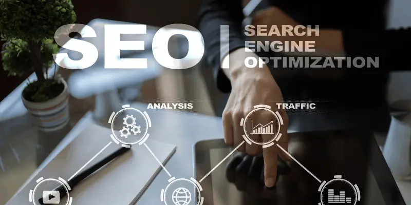

O que é Web 1, 2 e 3.0?
Antes de falar especificamente sobre a Web 4.0 é necessário explicar a cronologia histórica da internet, desde a internet 1.0.
A Web 1.0 refere-se a primeira geração do uso da internet e suas funcionalidades, que se baseiam num conjunto páginas estáticas na internet.
Na época, essa realidade da internet já era considerada um grande avanço, pois permitia aos usuários encontrar informações úteis nos sites.
Entretanto, ainda não havia espaço para interação para o usuário. Tão pouco permitia a produção de conteúdo.
Já a Web 2.0 foi responsável pelo crescimento de aplicativos de internet, os quais usam novas técnicas que permitiam que as páginas fossem dinâmicas para os usuários.
Isto é, houve uma mudança em relação ao conteúdo e a interação social dos usuários.
Anteriormente feito por poucos, ficava para trás para dar lugar a uma era na qual o conteúdo pode ser produzido, publicado e compartilhado por qualquer pessoa com acesso a internet.
Isso significa dizer que as pessoas deixaram de serem passivas, restrito a receptoras de mensagens, para serem responsáveis pela produção dos seus próprios conteúdos e disseminar para quem desejam.
Com a Web 3.0 a evolução aumentou ainda mais, graças a semântica, aumentou a riqueza na qualidade de informação, além da capacidade de otimizar o posicionamento de sites.

Linguagens mais potentes, redes neurais e algoritmos genéticos. Você digita um termo específico em um buscador como o Google e o site te leva até os tópicos que se relacionam diretamente com o termo.
Essa etapa foi fundamental para a revolução tecnológica a seguir (4.0).
O que é Web 4.0?
A internet 4.0 intensificou ainda mais a comunicação e armazenamento de dados. Foi por meio dessa evolução, que a comunicação sem fio (wireless) passou a se proliferar.
Em qualquer hora, em qualquer lugar do planeta, a Integração e interação acontece em tempo real.
Um exemplo, o GPS, não se restringe a guiar, mas para indicar rotas mais econômicas ou rápidas.
Esse sistema também será capaz de suportar as interações dos indivíduos, utilizando dados instantâneos ou históricos, para propor uma tomada de decisão.
Todo esse sistema é trabalhado de forma automática, através de um sistema complexo composto por inteligência artificial.
Essa tecnologia revolucionou a maneira de trabalhar, coletar e armazenar dados, sendo uma excelente alternativa para as empresas serem mais eficientes no mercado.

Como a Web 4.0 está ajudando as empresas?
A Web 4.0 possibilitou a criação de sistemas de integração operacional, principalmente na gestão.
Uma das principais ferramentas de integração é o Big Data, que significa um conjunto de dados muito amplos de forma que toda informação nos meios para ser encontrada, analisada rapidamente.
Ou seja: ele serve para obtenção de dados e análise de insights preciosos para melhorar as direções estratégicas.
Sendo importante na otimização de tempo e de recursos, a empresa que tem um Big Data pode ter alta eficiência na análise dos dados, sendo bastante positivo para a melhora dos processos das empresas.
Outro grande sistema de integração é a Internet das Coisas (IoT). Esse conceito significa o uso de um grande número de utensílios conectados à internet que fazem tarefas sem nenhuma ação humana.
É o caso das casas inteligentes. Com a integração unida à Web, diversos equipamentos e objetos da casa podem desempenhar tarefas que facilitam a vida do dono.
O exemplo é uma geladeira, que pode enviar informações para um smartphone quando for preciso comprar algum alimento.
Já na indústria, a Internet das Coisas é capaz de conectar todas as máquinas pela internet e identifica toda qualidade dos processos, desde a análise da produção, até a necessidade de algumas peças na manutenção.